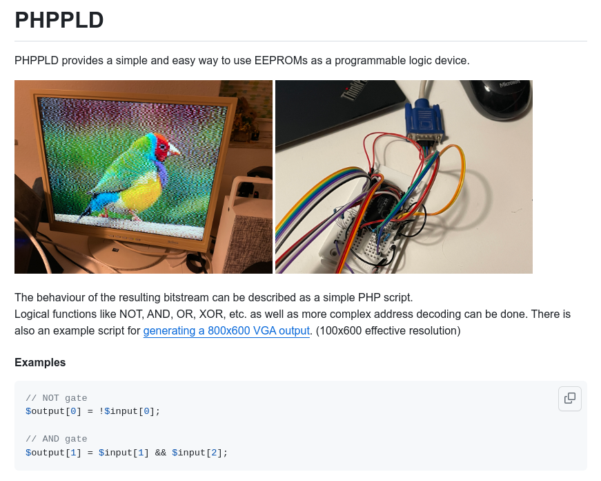

HARDWARE STATE MACHINES
When I was first starting with this stuff I got SO frustrated because I had NOBODY I could talk to who understood any of it.
I was SURE that computers were not needed, everything could be done with state machines. Today I have seen it come full circle as I have created computers with state machines. I have come to understand the advantages and limits.
I will try to tell the story of my work in order.
BASIC CONFIGURATION
This is the basic configuration:
In this diagram, the lines in and out of the memory and latch represent an arbitrary number of signals.
I'm not going to specify how many untill we get to specific examples.
1.1 - basic design
This works by having each memory location specify the address of the next memory location.
A data latch controls the flow so that only one controlled step is 'fed back' at a time. A clock source
(tho it does not need to be a regular rate) triggers the next step.
1.2 - basic operation
Programming of this system can be done in a table. Here is an example that performs
an irregular numbering sequence. The values in the sequence must be unique, because it is not possible
to define more than one next state for a source state.
1.3 - programming table for the
basic machine.
ADDING OUTPUTS
As shown though, the system does not really have any inputs or outputs. It just goes thru a sequence of unique numbers.
So lets make it a bit more complex. Here I have used some of the outputs of the memory to define a system output value.
Now the state and output can be different. Importantly, the output value does not need to be unique.

2.1 - machine with outputs added.
To program this system with outputs we can simply add a new column to the table.
Here is the revised table with an output column. Note that the output can have duplicate values.
2.2 - programming table with an
output column added.
The table can also be expressed in a type of program lines, each consists of an OUTPUT and GOTO command.
Here are the first two lines of the previous table expressed in this way.
2.3 - Alternate programing
language expression of table.
ADDING INPUTS
ok, Now its all gonna blow up, I apologize in advance.
Inputs are added to the addresses of the memory. Now, the next state is not only dictated by the
feedback from the memory, but also the condition of the input(s) at the time of the step signal.
3.1 - System with inputs,
feedback, and outputs.
Now the table form of this starts to get kinda complex. To keep it simpler, I have only given the input
an 'on' and 'off' value (one input bit) , but it could be almost as many bits as you want. Each source state needs to be
expanded for each possible input state (see, I told you it would explode)
3.2 - Table memory format with
an input bit.
In its programming form, the workings of it start to be a bit more transparent, and its much easier to
build and modify. What is important when doing the design is to make sure we have accounted for
every combination and state of the feedback and inputs.
3.3 - Alternate programing
language expression of table with inputs
OH THE COPLEXITIES
In about 2006 I wrote a program that would allow somone to build a 'microcontroller' from a ROM
using this sort of BASIC like programming language. But there was a problem when it came to actually using it.
My applications had more than one input and output, and I could only express it as one value.
4.1 - screen shots of 'romctrl'
a tool for building FSM controllers
from memory chips.
To get around this limitation, in about 2007 I wrote another program, this one allowed you to break your input, feedback, and
output values up, and specify how many values each one had. This would allow you to specify equations for the outputs and
feedback entries in the table. But it had a problem too, I was quickly sliding into developing a whole language to make the rules.
4.2 - screenshot of 'combo'
The next development was AWESOME. I discovered this project, PHPPLD, it used PHP to build that table image.
This meant that you could use ANY FUNCTION available in PHP to build the ROM table for your FSM.
(or LUT or whatever your making with this)

4.3 PHPPLD project screenshot.
Of course, being who I am, I wasn't happy with this, and after thinking about what I really needed
decided to write a library in C. I needed 3 things. Sweep the entire memory address range, break the
address down into fields, and recompose results into an output value.
4.4 - C_PLD project screenshot.
FIELDS
I would like to elaborate on bit fields. I will use this example of hardware.
In the construction of these systems, there is one memory block (LUT) and regardless of how you use
it, the inputs are expressed as one value and the output is expressed as one value. To simplify programming
we want these values broken down into fields.
5.1 - example system.
The memory has an 8 bit value input, A0-A7, and an 8 bit value output, D0-D7.
Thats all the memory cares about. Which index do you want, here is the value.
5.2 - The memory of the system.
This state machine has all the elements. It has inputs(orange), feedback(green), and outputs(blue). Each
of which are 4 bit systems. However even this simple system would require building a memory table
with 256 values. It is not fun to do this by hand. We will use software to do this for us.
5.3 - The system elements.
Input, feedback, output.
The system mechanically breaks down into the following bit fields:
Inputs: A4-7
Outputs: D4-7
Feedback: D0-3 -> A0-3

5.4 - mechanical bit field
breakdowns.
Furthermore, I will be breaking the 4 bits of feedback into two logical 2 bit values.
- program number.
- program state.
5.5 - logical bitfield
breakdowns.
I will leave the inputs fairly simple and use each button to select one of the 4 programs on the system.
The leds I will consider a 4 bit value.
5.6 - logical bit fields added
to physical bit fields.
PROGRAMMING
This is where the hole seems to exist on most of the information for these systems.
I'm going to use C_PLD for creating the ROM images that will operate the state machine.
Unlike the programs I wrote, with C_PLD you write a program, not a configuration file.
The first step is to configure the environment in main.c.

6.1 memory configuration in
main.c
Here is the part we will tackle next, I will start by breaking down the parts of the code and describing how it works.
Then I'll work on getting into modifying it to do particular things.
6.2 - example source for the
example circuit
The code has 3 main tasks, break down every address in the table into the variables used. (orange)
Apply your custom code to modify your variables. (blue)
Recombine the variables into entries for the table. (green)
These values are saved as binary values in a file named output.bin
6.3 - The different code
components hilighted.
System inputs: As said, we have 3 inputs to form the address of the table. The keyboard, the program number, and the program state.
These 3 lines of code take an "arbitrary" simulated address input, and form our 3 variables. These 3 lines of code split the that up for us.
6.4 - breaking down the address
of the table into variables.
Next is the completely custom code to perform our process. This is the first example of some code
I will demonstrate on a build of the example hardware. It stays in program 0, steps thru all 4 states,
Each state turns on one of the output LEDs.
6.5 - Code to produce our output
values.
The last step is to have it take the output values and compose them into a single value for the table.
This code is much like the breaking down of the addresses, but in reverse. This specifies which bits of the
table value our variables are mapped into.
6.6 - Merging the output
variables into a single value.
Its important to note that bit splicing positions do not have to be consecutive or in order. The EPROM pinout
is a good example. On this ROM, the adjacent address lines go from 0-7, but then 12, and 15.
spliceValueFromField(
&my10bitVarI, A, 10, 0,1,2,3,4,5,6,7,12,15);
A 4 bit value could be created with adjacent bits on the other side if
one wanted.spliceValueFromField(
&my4bitVarI, A, 4, 13,8,9,11);
6.7 - Example of unorderly bits
that can be handled in the bit splicing.
WORKING EXAMPLES
The first example is the code we just looked at.
The example uses no inputs, and only 2 bits of feedback. Program number of feedback is set to zero.
Feedback state is incremented every cycle.
One output LED is turned on for each state, representing the state numbers 1-4.
7.1 Source code for first example with customized sections hilighted
7.2 demo running on hardware.
--
In the next example, the 4 buttons determine the 'stable' state of the LEDs, which will sequence to a location based on the last button that was pushed. This is done by having each button latch in a different program number. Each program sequences to a different state and then holds there. Like the last example, each state lights an LED. The outputs have been synchronized between the programs so that the switching between programs is seamess to the display. The system maintains the state number when the program number is changed.
7.3 Unique code for second example.
7.4 Video of second example.
Methods
- using rising and falling edges of the clock on seperate latches to double the output size at the same clock speed.
- using multiple addreses to transform the outputs into serial bit streams.
- index compression
- events in, events out.
- executing an FSM on an FPGA
- executing an FSM on a CPU